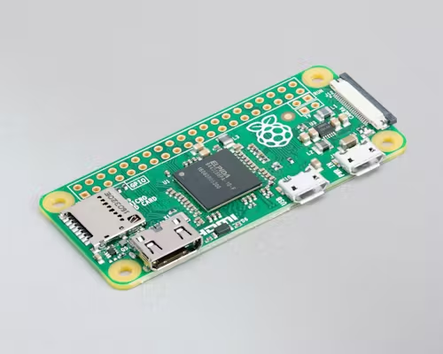
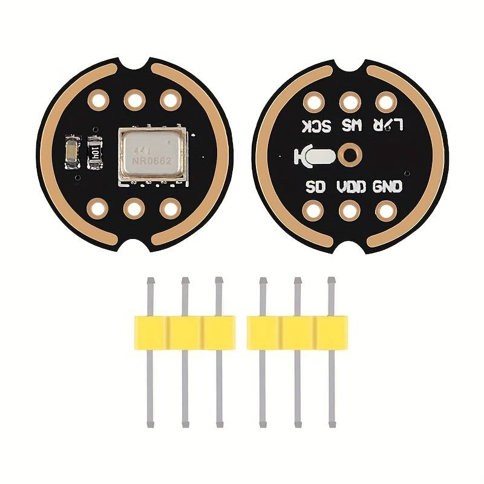

Oda — a Norwegian voice assistant
A two-month project for NTNU's avansert parallell track: a Norwegian-speaking voice assistant called Oda, running on a Raspberry Pi Zero W. Custom RNN wake-word trained on 30k Norwegian audio clips I filtered myself, Whisper for speech-to-text, an offline GPT for open questions, and a mesh of ESP32 sensor modules for the things a chatbot can't know.
What it does
You say "Oda," then ask something. If it's a command the system recognises ("what's the time", "what's the temperature in the room") it answers from cache or sensor data. If it's an open question ("what's the meaning of life") it routes to a local LLM. Everything runs offline by default — no cloud APIs in the answer path.

Wake-word from scratch
The hardest part of the project was data, not modelling. There is very little public Norwegian speech data with reliable captions, so I built my own pipeline: the 27k clips from the Norwegian språkbank, plus ~750k clips scraped from 251 captioned Norwegian YouTube channels. Caption quality varied wildly — TV channels like NRK and TV2 sometimes had Norwegian text over English audio — so I re-ran every clip through Whisper-large and only kept the ones where Whisper agreed with the original caption. About 30% survived. That left me ~30k high-quality clips to train on.
To make the model smaller, I swapped the standard Norwegian alphabet for a
phonetic one with two extra letters: ɵ for the "ng" sound and
ʂ for the "sj/kj/sjk/tj" cluster. Fewer, more evenly distributed
labels — easier to learn. The wake-word model itself is a small GRU with CTC loss,
chosen for efficiency on the Zero W.
The pipeline
- Always-on RNN watches a stream of mel-spectrograms for the word "Oda."
- Once it fires, the server records until ~0.36s of silence, then hands the audio to Whisper-medium for transcription.
- Command router checks if the transcript matches a known intent. If yes, fulfil it. If no, route to the LLM.
- Offline LLM:
orca-mini-3b-gguf2-q4_0via gpt4all. Doesn't speak Norwegian well, so the system translates NO→EN→prompt→EN→NO using deep_translator. - TTS cache for repetitive answers ("klokka er…", every number under 10¹¹) — 419 KB on disk, keeps the response path offline for simple queries.

ESP32 sensor mesh
The assistant can answer questions about the physical world because cheap ESP32 modules with sensors are scattered around — a thermometer, a PIR motion sensor, a dust sensor. Each ESP32 boots into Bluetooth-server mode if it hasn't seen the Wi-Fi before; saying "oppstart" makes the Pi scan for them and hand over credentials over Bluetooth (weakly encrypted so the SSID/password isn't broadcast in clear text). Once on the network they're addressable over local sockets — a single byte over the socket means "ping," "name," or "value."



Demo
Asking the time, the room temperature, and the meaning of life, in Norwegian.
What it taught me
The model was never the bottleneck. Norwegian speech data was, and figuring out how to mine and filter it from YouTube — using a bigger model to grade a smaller one — was the most useful skill I picked up. The second-most-useful was learning where PyTorch and TensorFlow each pull their weight: PyTorch felt better for training and iterating; TF felt faster once the model was frozen.
Course report
Full Norwegian IELS1001 report — "Talestyrt smart assistent med ESP moduler" — covers the full architecture, training pipeline, the sensor protocol, and the budget: